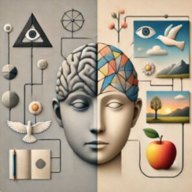
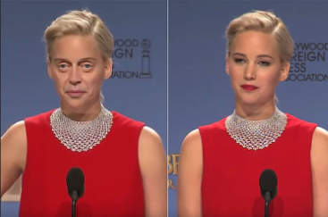
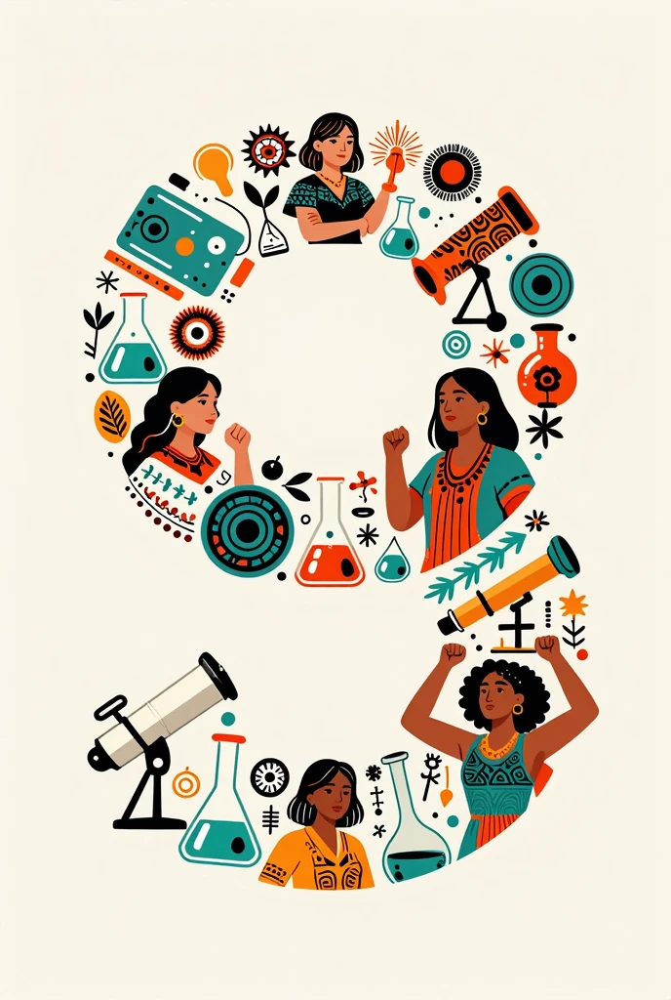

Introducción
¿Cómo conocemos? ¿Es la ciencia la única vía legítima de conocimiento o coexisten saberes diversos con igual dignidad? Este tema
problematiza el conocimiento desde una actitud filosófica: conocer siempre implica interpretar, posicionarse éticamente y dialogar
con múltiples marcos de sentido (científicos, tradicionales, artísticos, ancestrales, populares). En el MCCEMS 2025, se busca formar
estudiantes capaces de navegar la complejidad epistemológica actual: posverdad, desinformación algorítmica, crisis de confianza en
instituciones científicas y emergencia de epistemologías críticas (decoloniales, feministas, ambientales) que cuestionan el monopolio del
saber eurocéntrico y patriarcal.
Teorías del conocimiento
Racionalismo, empirismo y constructivismo representan tres grandes corrientes en la epistemología que explican cómo se
genera y valida el conocimiento humano. El racionalismo (Descartes, Spinoza, Leibniz) confía en la razón como fuente principal
de verdades universales e innatas, independientes de la experiencia sensorial. El empirismo (Locke, Berkeley, Hume) sostiene
que todo conocimiento proviene de los sentidos y la experiencia, rechazando ideas innatas. El constructivismo (Piaget, Vygotsky,
enfoques contemporáneos) propone que el conocimiento no se recibe pasivamente ni se descubre de forma pura, sino que se construye
activamente por el sujeto en interacción con su entorno social, cultural y lingüístico. En el contexto actual, estas teorías se
confrontan con nuevos desafíos: la inteligencia artificial genera conocimiento sin experiencia sensorial humana, los saberes ancestrales
e indígenas ofrecen formas de conocer holísticas y relacionales que la ciencia moderna a menudo ha marginado, y la posverdad pone en
cuestión la posibilidad misma de un conocimiento compartido y objetivo. Así, surgen encuentros fructíferos (ciencia dialogando con
saberes tradicionales en temas como cambio climático o medicina biocultural) y límites claros (la ciencia reduccionista vs. visiones
integrales de la naturaleza y la persona en cosmovisiones indígenas y humanísticas). Conocer nunca es un acto neutral: siempre implica
interpretar el mundo desde una posición ética, cultural y política, y asumir responsabilidad ante las consecuencias de lo que damos por
“verdadero”.
- Principales corrientes: racionalismo (razón como fuente de certeza), empirismo (experiencia sensorial como base del conocimiento),
constructivismo (construcción activa y social del saber).
- Límites y tensiones: la ciencia moderna (frecuentemente racionalista-empírica) tiende a privilegiar lo cuantificable y replicable,
mientras que los saberes humanísticos, artísticos y tradicionales aportan comprensión cualitativa, relacional y situada que no siempre
cabe en el método científico estricto.
- Encuentros actuales: diálogo interdisciplinario en temas como justicia climática (ciencia + saberes indígenas), salud comunitaria
(medicina convencional + prácticas ancestrales) y educación (constructivismo aplicado al aula).
- Importancia: conocer implica interpretar, posicionarse éticamente y asumir responsabilidad ante la información, los discursos
dominantes y las formas de exclusión epistemológica (eurocentrismo, androcentrismo, extractivismo del saber).

Figura 1: Tres caminos convergentes: razón, sentidos y construcción social → simboliza racionalismo, empirismo y constructivismo

Figura 2: Deepfake de una figura política → representa la erosión de la verdad en la era de la posverdad
El problema de la verdad y la posverdad
¿Qué es verdad en la era digital? Distinguir hechos verificables, opiniones legítimas y discursos manipuladores requiere
rigor crítico y herramientas éticas. En 2025-2026 la posverdad se agrava con: deepfakes políticos indistinguibles de grabaciones
reales, campañas masivas de negacionismo climático financiadas por intereses fósiles, IA generativa que produce desinformación a
escala industrial, y erosión de medios tradicionales frente a influencers y redes que priorizan engagement sobre veracidad.
Dato importante
Conocer no es neutral: implica ética, responsabilidad y compromiso ante la información, los discursos de odio y la
manipulación emocional. La posverdad no solo distorsiona hechos; erosiona la posibilidad misma de deliberación
democrática y acción colectiva frente a crisis globales.
Desarrollo del Tema
Conocer no es neutral: implica ética, responsabilidad y posicionamiento ante la información, los discursos de odio y las
narrativas dominantes. La epistemología filosófica nos ayuda a entender los límites y posibilidades de diferentes formas de saber.
Percepción, razón y límites del conocimiento
Límites de la ciencia (reduccionismo, sesgos metodológicos, financiamiento interesado) vs. aportes irremplazables de saberes
sociales, artísticos, ancestrales e indígenas (conocimiento situado, holístico, relacional). Ejemplo: saberes tradicionales sobre
manejo del agua y biodiversidad que han demostrado mayor resiliencia que modelos técnicos occidentales en contextos de cambio
climático.
Epistemologías críticas
Perspectivas de género, decoloniales (Aníbal Quijano: colonialidad del saber; Boaventura de Sousa Santos: ecología de saberes),
feministas (conocimiento situado, Donna Haraway) y ambientales: cuestionan el universalismo eurocéntrico y patriarcal,
reivindican saberes subalternizados y proponen diálogos interculturales horizontales. En México y América Latina, incluyen
epistemologías indígenas y afrodescendientes que integran cuerpo-territorio, memoria colectiva y relación armónica con la
naturaleza como formas legítimas de conocer y habitar el mundo.
Ejemplos Visuales
Ejemplo 1: Tres caminos convergentes (razón–sentidos–construcción) → simboliza las principales teorías del conocimiento
Ejemplo 2: Deepfake político → representa el desafío de distinguir verdad en la posverdad

Ejemplo 3: Círculo de saberes diversos (ciencia + indígena + feminista) → simboliza la ecología de saberes y epistemologías críticas
Conclusión
Este tema fortalece la autonomía intelectual: saber que conocer es posicionarse éticamente y
dialogar con diversidad de saberes para enfrentar desafíos contemporáneos.